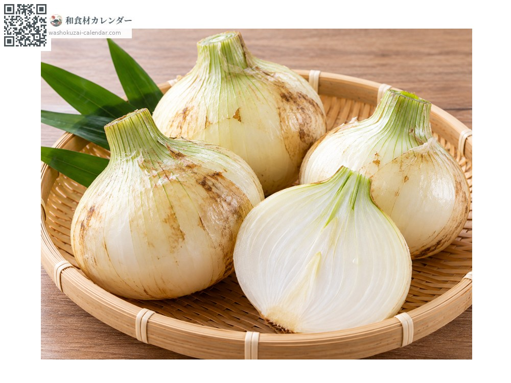
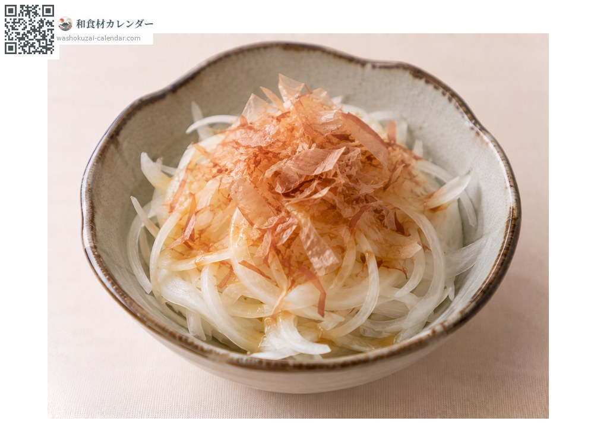
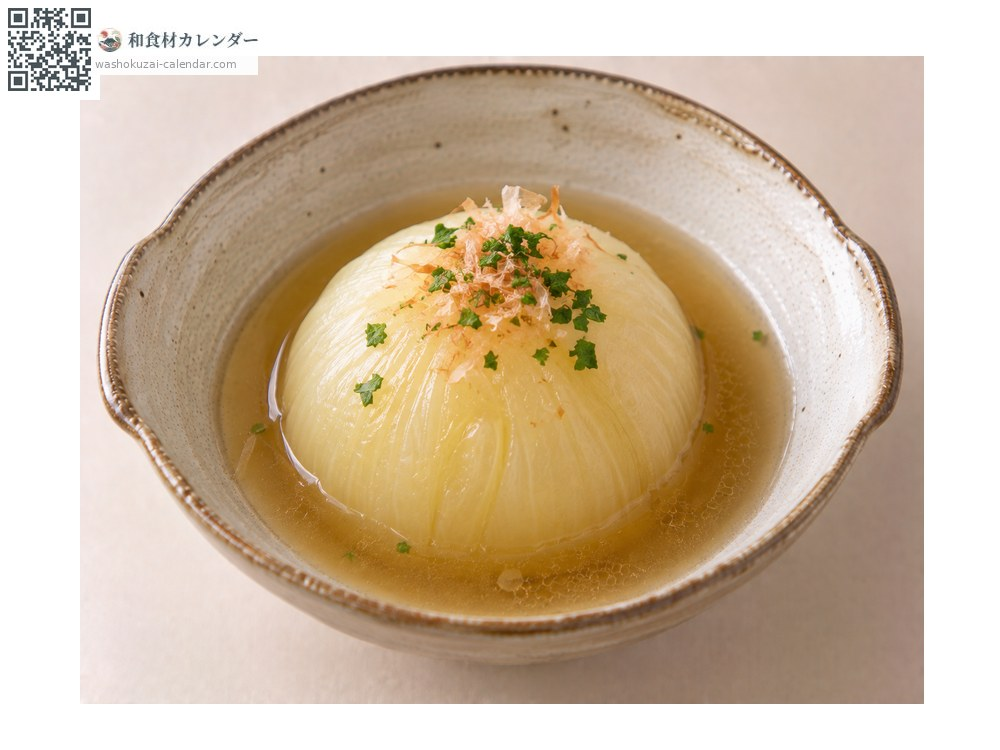
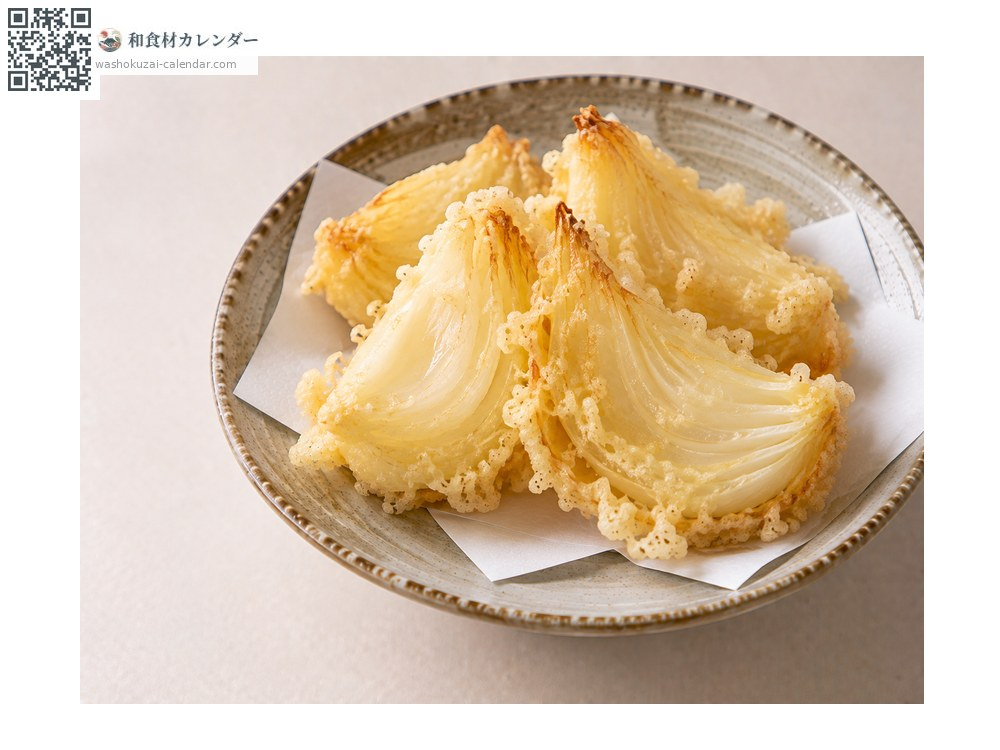
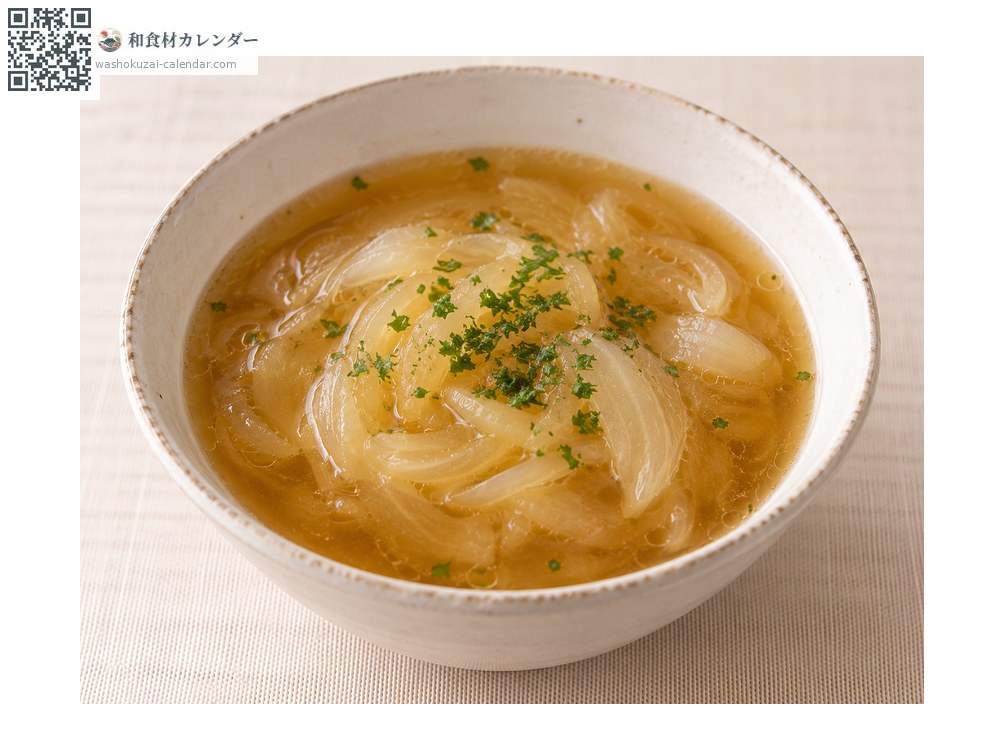

Vegetables
New-crop onion
新玉ねぎ しんたまねぎ shintamanegi
Also known asshintamanegi
At its best in Mar, Apr, May

When it is at its best
Jan
Feb
Mar
Apr
May
Jun
Jul
Aug
Sep
Oct
Nov
Dec
In seasonAvailable
How to cook

Thin-sliced onion salad
Mild enough to eat raw. With bonito flakes and soy sauce.

Simmered whole
Simmered whole in clear broth until soft.

Tempura
Brings out the sweetness.

Onion soup
Sweet even without browning first.
How to choose
Unblemished skin, heavy for its size, and a tight neck.
Storage
High water content means it does not keep. About a week refrigerated; wrapping in newspaper helps.
Main areas
Good to know
Shipped straight after harvest, so it is juicy and mild. Ordinary onions are cured for about a month before shipping.
At their best around the same time
 Butterbur sprout
Butterbur sprout Bamboo shoot
Bamboo shoot Bracken shoot
Bracken shoot Fiddlehead fern
Fiddlehead fern Udo
Udo Butterbur
Butterbur Rapeseed blossom
Rapeseed blossom Japanese parsley
Japanese parsley